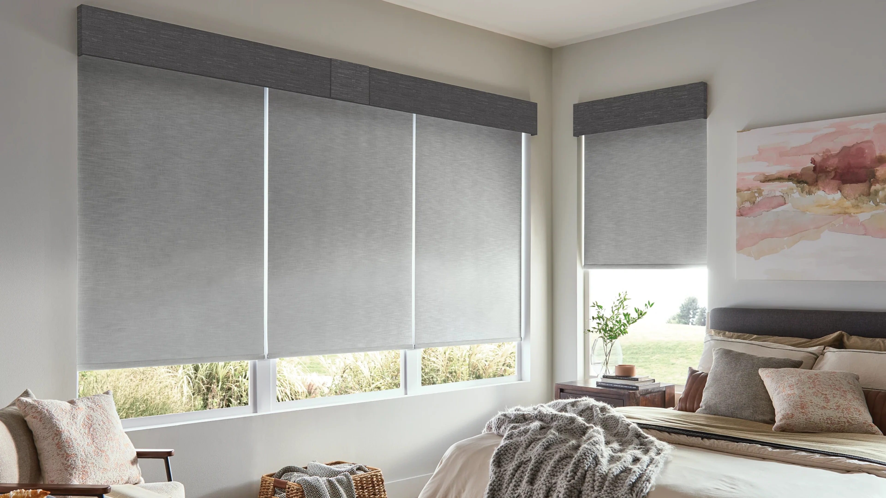
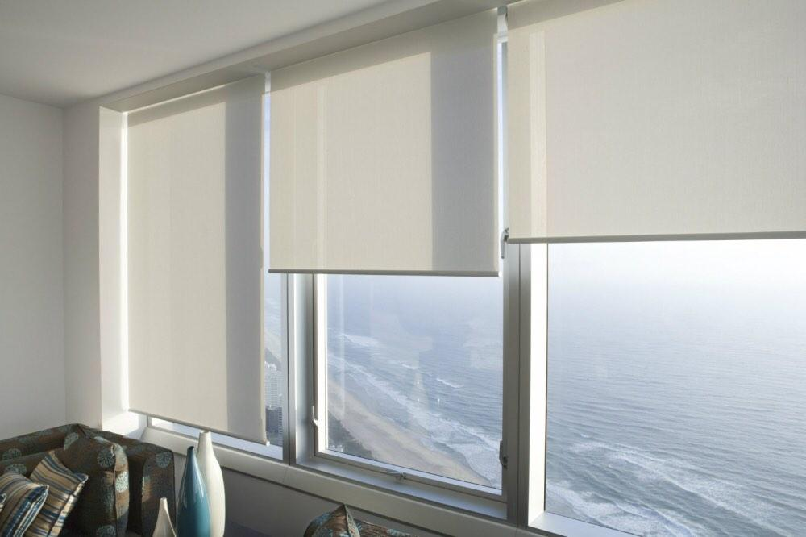

Profesyonel Perde Yıkama
Stor ve zebra perdelerinizin temizliğini özel yıkama teknikleri ile yapıyoruz. Ultrasonik temizleme sistemi ile perdelerinizi yıpratmadan temizliyoruz.
Perde Yıkama Sürecimiz
- Perde sökümü
- Ön kontrol ve leke tespiti
- Ultrasonik temizleme
- Özel şampuan uygulaması
- Durulama
- Kurutma
- Ütüleme
- Montaj
Neden Profesyonel Perde Yıkama?
- Ultrasonik teknoloji ile temizlik
- Kırışıklık önleme
- Renk ve doku koruması
- Profesyonel ütüleme
- Yerinde söküm ve montaj
- Garantili hizmet


Perdeleriniz İçin Profesyonel Çözüm
Perdelerinizin bakımı için hemen randevu alın!
Randevu Al